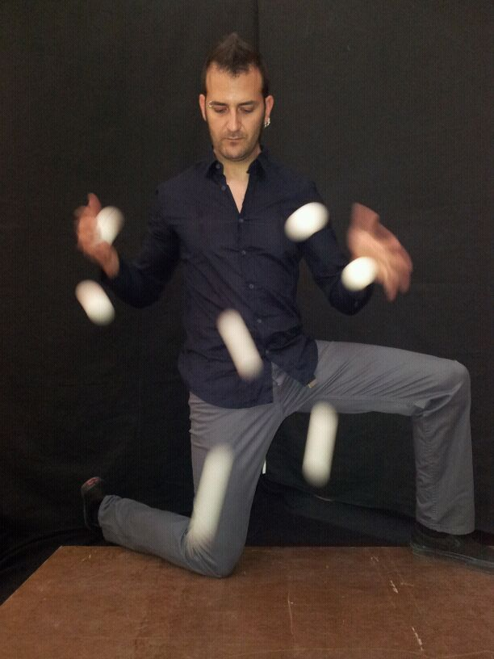

David Jaled

A pesar de haber trabajado con Le Cirque du Soleil o haber formado su propia compañía, Circo Croissant, junto a otros destacados artistas aragoneses con la cual estuvieron de residencia artística en Francia; David insiste en que no quiere dedicarse profesionalmente al mundo que tanto le apasiona. Afortunadamente, este artistazo estará presentandonos su número de rebote. Y es que tantos años de pasión y dedicación han dado sus frutos. Estilo, técnica y ¡una energía increíble!